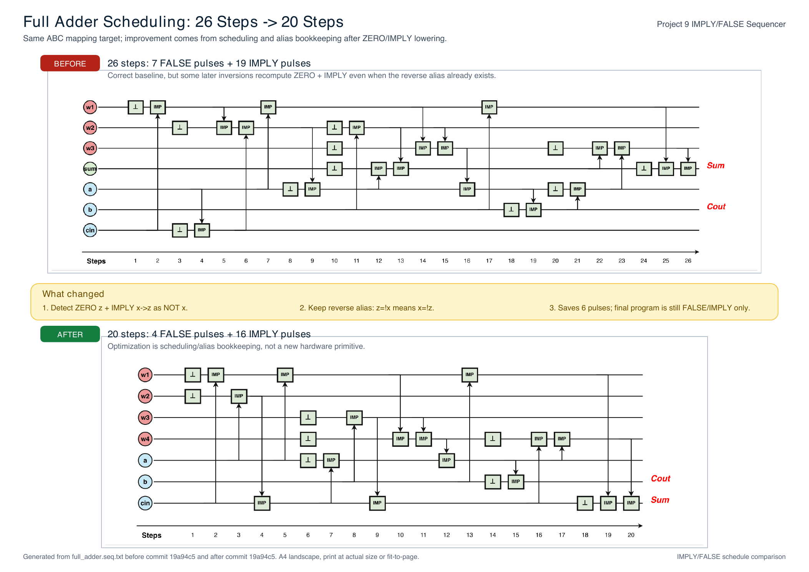
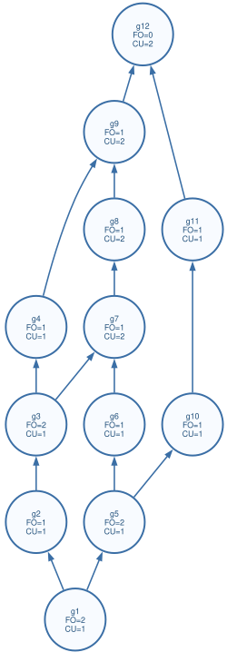
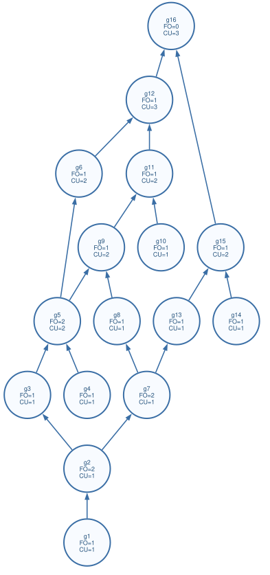
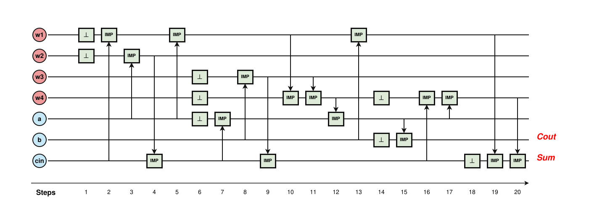

Yosys/AIG plan
Use existing synthesis tools for normalization instead of writing a Boolean optimizer from scratch.
The project moved from a Yosys/AIG plan into a reproducible ABC adapter flow, then into an explicit ZERO/IMPLY primitive graph, and now into a sequencer optimization that reduces pulses while keeping the final program hardware-real.
The key message is that the hardware primitive set did not change. The new result comes from exposing the primitive dependency graph and scheduling it better.
Use existing synthesis tools for normalization instead of writing a Boolean optimizer from scratch.
ABC maps through IMPLY plus helper gates. This is a mapping convenience, not the final memory operation set.
Every helper is expanded into primitive nodes, for example INV x becomes ZERO z followed by IMPLY x, z.
The sequencer treats that primitive shape as a cacheable inverse while still emitting only FALSE and IMPLY pulses.
The same compile flow now emits fewer optimized pulses for both the explanatory full adder and the first ISCAS'85 smoke circuit.
These images are generated from the current docs artifacts. The PDF link opens the printable A4 26-to-20 comparison sheet.

Shows the adapter netlist stage before helper gates are lowered.

Shows the ZERO/IMPLY graph that the sequencer receives.


Each row was produced by run_iscas85.py through compile.py. PASS means ABC mapping, primitive lowering, optimized sequence, naive sequence, and simulator sanity checks completed.
| Circuit | Inputs | Outputs | Before opt | After opt | Delta | Cells before -> after | Status |
|---|---|---|---|---|---|---|---|
| c1355 | 41 | 32 | 960 | 888 | -72 | 119 -> 229 | PASS |
| c17 | 5 | 2 | 20 | 15 | -5 | 7 -> 8 | PASS |
| c1908 | 33 | 25 | 958 | 807 | -151 | 152 -> 208 | PASS |
| c2670 | 233 | 140 | 1358 | 1235 | -123 | 282 -> 367 | PASS |
| c3540 | 50 | 22 | 2174 | 1981 | -193 | 236 -> 323 | PASS |
| c432 | 36 | 7 | 336 | 243 | -93 | 56 -> 72 | PASS |
| c499 | 41 | 32 | 1013 | 885 | -128 | 133 -> 228 | PASS |
| c5315 | 178 | 123 | 3142 | 2867 | -275 | 483 -> 640 | PASS |
| c6288 | 32 | 32 | 4930 | 4616 | -314 | 724 -> 741 | PASS |
| c7552 | 207 | 108 | 3583 | 3190 | -393 | 564 -> 717 | PASS |
| c880 | 60 | 26 | 716 | 631 | -85 | 131 -> 160 | PASS |
These are the commands to copy during the 2026-07-03 Fabian discussion. Run them from the repository root unless a command changes directory.
cd "/Users/apple/Library/Mobile Documents/com~apple~CloudDocs/海德堡大学/2026ss/mcc/src"
python3.14 synthesis/compile.py synthesis/circuits/full_adder.v
python3.14 synthesis/compile.py synthesis/circuits/c17.vcd "/Users/apple/Library/Mobile Documents/com~apple~CloudDocs/海德堡大学/2026ss/mcc/src"
python3.14 -m pytest synthesis/tests -qcd "/Users/apple/Library/Mobile Documents/com~apple~CloudDocs/海德堡大学/2026ss/mcc/src"
if [ ! -d /tmp/iscas85-benchmarks/.git ]; then
git clone --depth 1 https://github.com/santoshsmalagi/Benchmarks.git /tmp/iscas85-benchmarks
fi
python3.14 synthesis/run_iscas85.py /tmp/iscas85-benchmarks/ISCAS85 \
--csv docs/iscas85_results_after.csv \
--md docs/iscas85_results_after.mdThe last slide of the discussion should turn the progress into decisions about evaluation and scheduler direction.
{kind=link}